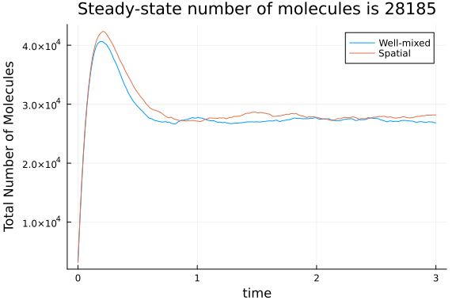
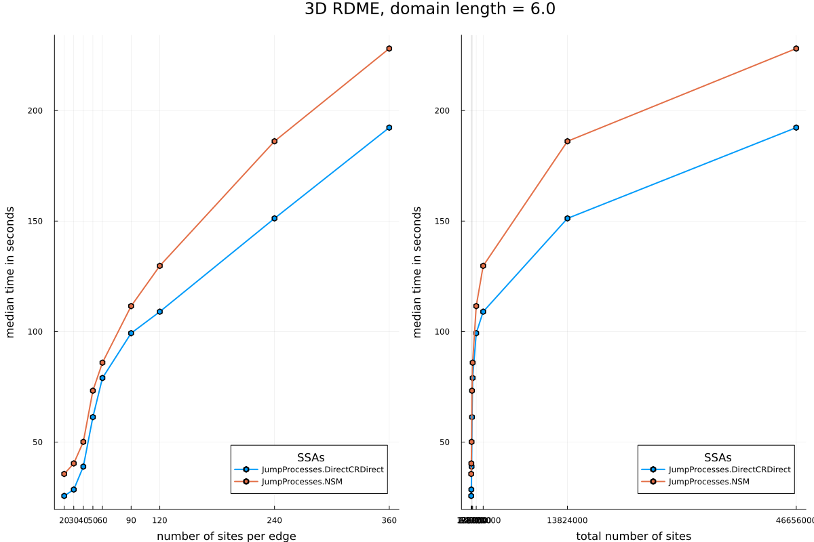

Spatial Signaling Model from Sanft and Othmer (2015)
using Catalyst, JumpProcesses, BenchmarkTools, Plots, RandomModel description and setup
Here we implement the model from [1] (8 species and 12 reactions) for different mesh sizes, and benchmark the performance of JumpProcesses.jl's spatial stochastic simulation alorithms (SSAs). Below, the value N will denote the number of subvolumes along one dimension of a cubic grid, representing the reaction volume. In [1] this value ranges from 20 to 60.
We first define some helper functions to convert concentration units into number units, as needed for spatial SSAs.
invmicromolar_to_cubicmicrometer(invconcen) = invconcen / (6.02214076e2)
micromolar_to_invcubicmicrometer(concen) = (6.02214076e2) * concenmicromolar_to_invcubicmicrometer (generic function with 1 method)Next we create a well-mixed model with the desired chemistry
rn = @reaction_network begin
k₁, EA --> EA + A
k₁, EB --> EB + B
(ka,kd), EA + B <--> EAB
(ka,kd), EAB + B <--> EAB₂
(ka,kd), EB + A <--> EBA
(ka,kd), EBA + A <--> EBA₂
k₄, A --> ∅
k₄, B --> ∅
end k₁ ka kd k₄Model ##ReactionSystem#351
States (8):
EA(t)
A(t)
EB(t)
B(t)
⋮
Parameters (4):
k₁
ka
kd
k₄Let's next make a function to calculate the spatial transport rates, mesh/graph that will represent our domain, and initial condition. We use a cubic lattice of size N by N by N with reflecting boundary conditions
# domain_len is the physical length of each side of the cubic domain
# units should be in μm (6.0 or 12.0 in Sanft)
# D is the diffusivity in units of (μm)^2 s⁻¹
function transport_model(rn, N; domain_len = 6.0, D = 1.0, rng = Random.default_rng())
# topology
h = domain_len / N
dims = (N, N, N)
num_nodes = prod(dims)
# Cartesian grid with reflecting BC at boundaries
grid = CartesianGrid(dims)
# Cartesian grid hopping rate to neighbors
hopping_rate = D / h^2
# this indicates we have a uniform rate of D/h^2 along each edge at each site
hopping_constants = hopping_rate * ones(numspecies(rn))
# figure out the indices of species EA and EB
@unpack EA, EB = rn
EAidx = findfirst(isequal(EA), species(rn))
EBidx = findfirst(isequal(EB), species(rn))
# spatial initial condition
# initial concentration of 12.3 nM = 12.3 * 1e-3 μM
num_molecules = trunc(Int, micromolar_to_invcubicmicrometer(12.3*1e-3) * (domain_len^3))
u0 = zeros(Int, 8, num_nodes)
rand_EA = rand(rng, 1:num_nodes, num_molecules)
rand_EB = rand(rng, 1:num_nodes, num_molecules)
for i in 1:num_molecules
u0[EAidx, rand_EA[i]] += 1
u0[EBidx, rand_EB[i]] += 1
end
grid, hopping_constants, h, u0
endtransport_model (generic function with 1 method)Finally, let's make a function to setup the well-mixed model from the reaction model in a cube of side length h:
function wellmixed_model(rn, u0, end_time, h)
kaval = invmicromolar_to_cubicmicrometer(46.2) / h^3
setdefaults!(rn, [:k₁ => 150, :ka => kaval, :kd => 3.82, :k₄ => 6.0])
# well-mixed initial condition corresponding to the spatial initial condition
u0wm = sum(u0, dims = 2)
dprobwm = DiscreteProblem(rn, u0wm, (0.0, end_time))
jprobwm = JumpProblem(rn, dprobwm, Direct(), save_positions = (false,false))
majumps = jprobwm.massaction_jump
majumps, dprobwm, jprobwm, u0wm
endwellmixed_model (generic function with 1 method)Model Solution
Let's look at one example to check our model seems reasonable. We'll plot the total number of molecules in the system to verify we get around 28,000 molecules, as reported in Sanft [1], when using a domain length of 6 μm.
end_time = 3.0
grid, hopping_constants, h, u0 = transport_model(rn, 60)
majumps, dprobwm, jprobwm, u0wm = wellmixed_model(rn, u0, end_time, 6.0)
sol = solve(jprobwm, SSAStepper(); saveat = end_time/200)
Ntot = [sum(u) for u in sol.u]
plt = plot(sol.t, Ntot, label="Well-mixed", ylabel="Total Number of Molecules",
xlabel="time")
# spatial model
majumps, dprobwm, jprobwm, u0wm = wellmixed_model(rn, u0, end_time, h)
dprob = DiscreteProblem(u0, (0.0, end_time), copy(dprobwm.p))
jprob = JumpProblem(dprob, DirectCRDirect(), majumps; hopping_constants,
spatial_system = grid, save_positions = (false, false))
spatial_sol = solve(jprob, SSAStepper(); saveat = end_time/200)
Ntot = [sum(vec(u)) for u in spatial_sol.u]
plot!(plt, spatial_sol.t, Ntot, label="Spatial",
title="Steady-state number of molecules is $(Ntot[end])")
Benchmarking performance of the methods
We can now run the solvers and record the performance with BenchmarkTools. Let's first create a DiscreteCallback to terminate simulations once we reach 10^8 events:
@Base.kwdef mutable struct EventCallback
n::Int = 0
end
function (ecb::EventCallback)(u, t, integ)
ecb.n += 1
ecb.n == 10^8
end
function (ecb::EventCallback)(integ)
# save the final state
terminate!(integ)
nothing
endWe next create a function to run and return our benchmarking results.
function benchmark_and_save!(bench_dict, end_times, Nv, algs, domain_len)
@assert length(end_times) == length(Nv)
# callback for terminating simulations
ecb = EventCallback()
cb = DiscreteCallback(ecb, ecb)
for (end_time, N) in zip(end_times, Nv)
names = ["$s"[1:end-2] for s in algs]
grid, hopping_constants, h, u0 = transport_model(rn, N; domain_len)
# we create a well-mixed model within a domain of the size of *one* voxel, h
majumps, dprobwm, jprobwm, u0wm = wellmixed_model(rn, u0, end_time, h)
# the spatial problem
dprob = DiscreteProblem(u0, (0.0, end_time), copy(dprobwm.p))
@show N
# benchmarking and saving
benchmarks = Vector{BenchmarkTools.Trial}(undef, length(algs))
# callback for terminating simulations
for (i, alg) in enumerate(algs)
name = names[i]
println("benchmarking $name")
jp = JumpProblem(dprob, alg, majumps, hopping_constants=hopping_constants,
spatial_system = grid, save_positions=(false,false))
b = @benchmarkable solve($jp, SSAStepper(); saveat = $(dprob.tspan[2]), callback) setup = (callback = deepcopy($cb)) samples = 10 seconds = 3600
bench_dict[name, N] = run(b)
end
end
endbenchmark_and_save! (generic function with 1 method)Finally, let's make a function to plot the benchmarking data.
function fetch_and_plot(bench_dict, domain_len)
names = unique([key[1] for key in keys(bench_dict)])
Nv = sort(unique([key[2] for key in keys(bench_dict)]))
plt1 = plot()
plt2 = plot()
medtimes = [Float64[] for i in 1:length(names)]
for (i,name) in enumerate(names)
for N in Nv
try
push!(medtimes[i], median(bench_dict[name, N]).time/1e9)
catch
break
end
end
len = length(medtimes[i])
plot!(plt1, Nv[1:len], medtimes[i], marker = :hex, label = name, lw = 2)
plot!(plt2, (Nv.^3)[1:len], medtimes[i], marker = :hex, label = name, lw = 2)
end
plot!(plt1, xlabel = "number of sites per edge", ylabel = "median time in seconds",
xticks = Nv, legend = :bottomright)
plot!(plt2, xlabel = "total number of sites", ylabel = "median time in seconds",
xticks = (Nv.^3, string.(Nv.^3)), legend = :bottomright)
plot(plt1, plt2; size = (1200,800), legendtitle = "SSAs",
plot_title="3D RDME, domain length = $domain_len", left_margin=5Plots.mm)
endfetch_and_plot (generic function with 1 method)We are now ready to run the benchmarks and plot the results. We start with a domain length of 12 μm, analogous to Fig. 6 in [1]:
bench_dict = Dict{Tuple{String, Int}, BenchmarkTools.Trial}()
algs = [NSM(), DirectCRDirect()]
Nv = [20, 30, 40, 50, 60, 90, 120, 240, 360]
end_times = 20000.0 * ones(length(Nv))
domain_len = 12.0
benchmark_and_save!(bench_dict, end_times, Nv, algs, domain_len)N = 20
benchmarking JumpProcesses.NSM
benchmarking JumpProcesses.DirectCRDirect
N = 30
benchmarking JumpProcesses.NSM
benchmarking JumpProcesses.DirectCRDirect
N = 40
benchmarking JumpProcesses.NSM
benchmarking JumpProcesses.DirectCRDirect
N = 50
benchmarking JumpProcesses.NSM
benchmarking JumpProcesses.DirectCRDirect
N = 60
benchmarking JumpProcesses.NSM
benchmarking JumpProcesses.DirectCRDirect
N = 90
benchmarking JumpProcesses.NSM
benchmarking JumpProcesses.DirectCRDirect
N = 120
benchmarking JumpProcesses.NSM
benchmarking JumpProcesses.DirectCRDirect
N = 240
benchmarking JumpProcesses.NSM
benchmarking JumpProcesses.DirectCRDirect
N = 360
benchmarking JumpProcesses.NSM
benchmarking JumpProcesses.DirectCRDirectplt=fetch_and_plot(bench_dict, domain_len)
We next consider a domain of length 6 μm, analogous to Fig. 7 in [1].
bench_dict = Dict{Tuple{String, Int}, BenchmarkTools.Trial}()
domain_len = 6.0
benchmark_and_save!(bench_dict, end_times, Nv, algs, domain_len)N = 20
benchmarking JumpProcesses.NSM
benchmarking JumpProcesses.DirectCRDirect
N = 30
benchmarking JumpProcesses.NSM
benchmarking JumpProcesses.DirectCRDirect
N = 40
benchmarking JumpProcesses.NSM
benchmarking JumpProcesses.DirectCRDirect
N = 50
benchmarking JumpProcesses.NSM
benchmarking JumpProcesses.DirectCRDirect
N = 60
benchmarking JumpProcesses.NSM
benchmarking JumpProcesses.DirectCRDirect
N = 90
benchmarking JumpProcesses.NSM
benchmarking JumpProcesses.DirectCRDirect
N = 120
benchmarking JumpProcesses.NSM
benchmarking JumpProcesses.DirectCRDirect
N = 240
benchmarking JumpProcesses.NSM
benchmarking JumpProcesses.DirectCRDirect
N = 360
benchmarking JumpProcesses.NSM
benchmarking JumpProcesses.DirectCRDirectplt=fetch_and_plot(bench_dict, domain_len)
References
Appendix
These benchmarks are a part of the SciMLBenchmarks.jl repository, found at: https://github.com/SciML/SciMLBenchmarks.jl. For more information on high-performance scientific machine learning, check out the SciML Open Source Software Organization https://sciml.ai.
To locally run this benchmark, do the following commands:
using SciMLBenchmarks
SciMLBenchmarks.weave_file("benchmarks/Jumps","Spatial_Signaling_Sanft.jmd")Computer Information:
Julia Version 1.8.5
Commit 17cfb8e65ea (2023-01-08 06:45 UTC)
Platform Info:
OS: Linux (x86_64-linux-gnu)
CPU: 128 × AMD EPYC 7502 32-Core Processor
WORD_SIZE: 64
LIBM: libopenlibm
LLVM: libLLVM-13.0.1 (ORCJIT, znver2)
Threads: 128 on 128 virtual cores
Environment:
JULIA_CPU_THREADS = 128
JULIA_DEPOT_PATH = /cache/julia-buildkite-plugin/depots/5b300254-1738-4989-ae0a-f4d2d937f953
Package Information:
Status `/cache/build/exclusive-amdci1-0/julialang/scimlbenchmarks-dot-jl/benchmarks/Jumps/Project.toml`
[6e4b80f9] BenchmarkTools v1.3.2
[479239e8] Catalyst v12.3.1
[a93c6f00] DataFrames v1.4.4
[faf0f6d7] JumpProblemLibrary v0.1.3
[ccbc3e58] JumpProcesses v9.3.1
⌃ [961ee093] ModelingToolkit v8.40.0
⌃ [1dea7af3] OrdinaryDiffEq v6.37.0
⌃ [91a5bcdd] Plots v1.32.0
[31c91b34] SciMLBenchmarks v0.1.1
[9a3f8284] Random
[10745b16] Statistics
Info Packages marked with ⌃ have new versions available and may be upgradable.And the full manifest:
Status `/cache/build/exclusive-amdci1-0/julialang/scimlbenchmarks-dot-jl/benchmarks/Jumps/Manifest.toml`
[c3fe647b] AbstractAlgebra v0.27.8
⌃ [1520ce14] AbstractTrees v0.4.3
[79e6a3ab] Adapt v3.4.0
[dce04be8] ArgCheck v2.3.0
[ec485272] ArnoldiMethod v0.2.0
[4fba245c] ArrayInterface v6.0.24
[30b0a656] ArrayInterfaceCore v0.1.28
[6ba088a2] ArrayInterfaceGPUArrays v0.2.2
[015c0d05] ArrayInterfaceOffsetArrays v0.1.7
[b0d46f97] ArrayInterfaceStaticArrays v0.1.5
[dd5226c6] ArrayInterfaceStaticArraysCore v0.1.3
[15f4f7f2] AutoHashEquals v0.2.0
[198e06fe] BangBang v0.3.37
[9718e550] Baselet v0.1.1
[6e4b80f9] BenchmarkTools v1.3.2
[e2ed5e7c] Bijections v0.1.4
[d1d4a3ce] BitFlags v0.1.7
[62783981] BitTwiddlingConvenienceFunctions v0.1.5
[2a0fbf3d] CPUSummary v0.2.1
[00ebfdb7] CSTParser v3.3.6
[49dc2e85] Calculus v0.5.1
[479239e8] Catalyst v12.3.1
⌃ [d360d2e6] ChainRulesCore v1.15.6
[9e997f8a] ChangesOfVariables v0.1.4
[fb6a15b2] CloseOpenIntervals v0.1.11
[944b1d66] CodecZlib v0.7.0
[35d6a980] ColorSchemes v3.20.0
[3da002f7] ColorTypes v0.11.4
[c3611d14] ColorVectorSpace v0.9.10
[5ae59095] Colors v0.12.10
[861a8166] Combinatorics v1.0.2
⌃ [a80b9123] CommonMark v0.8.7
[38540f10] CommonSolve v0.2.3
[bbf7d656] CommonSubexpressions v0.3.0
[34da2185] Compat v4.5.0
[b152e2b5] CompositeTypes v0.1.3
[a33af91c] CompositionsBase v0.1.1
[8f4d0f93] Conda v1.7.0
[187b0558] ConstructionBase v1.4.1
[d38c429a] Contour v0.6.2
[adafc99b] CpuId v0.3.1
[a8cc5b0e] Crayons v4.1.1
[9a962f9c] DataAPI v1.14.0
[a93c6f00] DataFrames v1.4.4
[864edb3b] DataStructures v0.18.13
[e2d170a0] DataValueInterfaces v1.0.0
[244e2a9f] DefineSingletons v0.1.2
[b429d917] DensityInterface v0.4.0
⌃ [2b5f629d] DiffEqBase v6.113.1
[459566f4] DiffEqCallbacks v2.24.3
[163ba53b] DiffResults v1.1.0
[b552c78f] DiffRules v1.12.2
[b4f34e82] Distances v0.10.7
[31c24e10] Distributions v0.25.80
[ffbed154] DocStringExtensions v0.9.3
⌅ [5b8099bc] DomainSets v0.5.15
[fa6b7ba4] DualNumbers v0.6.8
[7c1d4256] DynamicPolynomials v0.4.5
[4e289a0a] EnumX v1.0.4
[d4d017d3] ExponentialUtilities v1.22.0
[e2ba6199] ExprTools v0.1.8
[411431e0] Extents v0.1.1
[c87230d0] FFMPEG v0.4.1
[7034ab61] FastBroadcast v0.2.4
[9aa1b823] FastClosures v0.3.2
[29a986be] FastLapackInterface v1.2.8
[1a297f60] FillArrays v0.13.6
[6a86dc24] FiniteDiff v2.17.0
[53c48c17] FixedPointNumbers v0.8.4
[59287772] Formatting v0.4.2
[f6369f11] ForwardDiff v0.10.34
[069b7b12] FunctionWrappers v1.1.3
[77dc65aa] FunctionWrappersWrappers v0.1.1
⌃ [46192b85] GPUArraysCore v0.1.2
⌅ [28b8d3ca] GR v0.66.2
[c145ed77] GenericSchur v0.5.3
⌃ [cf35fbd7] GeoInterface v1.0.1
[5c1252a2] GeometryBasics v0.4.5
[d7ba0133] Git v1.2.1
[c27321d9] Glob v1.3.0
[86223c79] Graphs v1.7.4
[42e2da0e] Grisu v1.0.2
[0b43b601] Groebner v0.2.11
[d5909c97] GroupsCore v0.4.0
⌃ [cd3eb016] HTTP v1.7.1
[eafb193a] Highlights v0.5.2
[3e5b6fbb] HostCPUFeatures v0.1.13
[34004b35] HypergeometricFunctions v0.3.11
[7073ff75] IJulia v1.24.0
[615f187c] IfElse v0.1.1
[d25df0c9] Inflate v0.1.3
[83e8ac13] IniFile v0.5.1
[22cec73e] InitialValues v0.3.1
[18e54dd8] IntegerMathUtils v0.1.0
⌅ [8197267c] IntervalSets v0.7.3
[3587e190] InverseFunctions v0.1.8
[41ab1584] InvertedIndices v1.2.0
[92d709cd] IrrationalConstants v0.1.1
[c8e1da08] IterTools v1.4.0
[42fd0dbc] IterativeSolvers v0.9.2
[82899510] IteratorInterfaceExtensions v1.0.0
[692b3bcd] JLLWrappers v1.4.1
[682c06a0] JSON v0.21.3
⌃ [98e50ef6] JuliaFormatter v1.0.18
[faf0f6d7] JumpProblemLibrary v0.1.3
[ccbc3e58] JumpProcesses v9.3.1
[ef3ab10e] KLU v0.4.0
[ba0b0d4f] Krylov v0.9.0
[0b1a1467] KrylovKit v0.6.0
[b964fa9f] LaTeXStrings v1.3.0
[2ee39098] LabelledArrays v1.12.5
[984bce1d] LambertW v0.4.5
[23fbe1c1] Latexify v0.15.18
[10f19ff3] LayoutPointers v0.1.12
[d3d80556] LineSearches v7.2.0
[7ed4a6bd] LinearSolve v1.33.0
[2ab3a3ac] LogExpFunctions v0.3.19
[e6f89c97] LoggingExtras v1.0.0
⌃ [bdcacae8] LoopVectorization v0.12.146
[1914dd2f] MacroTools v0.5.10
[d125e4d3] ManualMemory v0.1.8
[739be429] MbedTLS v1.1.7
[442fdcdd] Measures v0.3.2
[e9d8d322] Metatheory v1.3.5
[128add7d] MicroCollections v0.1.3
[e1d29d7a] Missings v1.1.0
⌃ [961ee093] ModelingToolkit v8.40.0
[46d2c3a1] MuladdMacro v0.2.4
[102ac46a] MultivariatePolynomials v0.4.6
[ffc61752] Mustache v1.0.14
[d8a4904e] MutableArithmetics v1.1.0
[d41bc354] NLSolversBase v7.8.3
[2774e3e8] NLsolve v4.5.1
[77ba4419] NaNMath v1.0.1
[8913a72c] NonlinearSolve v1.1.1
[6fe1bfb0] OffsetArrays v1.12.8
[4d8831e6] OpenSSL v1.3.3
[bac558e1] OrderedCollections v1.4.1
⌃ [1dea7af3] OrdinaryDiffEq v6.37.0
[90014a1f] PDMats v0.11.16
[d96e819e] Parameters v0.12.3
[69de0a69] Parsers v2.5.3
[ccf2f8ad] PlotThemes v3.1.0
[995b91a9] PlotUtils v1.3.2
⌃ [91a5bcdd] Plots v1.32.0
[e409e4f3] PoissonRandom v0.4.3
[f517fe37] Polyester v0.7.1
[1d0040c9] PolyesterWeave v0.2.0
[2dfb63ee] PooledArrays v1.4.2
[d236fae5] PreallocationTools v0.4.8
[21216c6a] Preferences v1.3.0
[08abe8d2] PrettyTables v2.2.2
[27ebfcd6] Primes v0.5.3
⌃ [1fd47b50] QuadGK v2.6.0
[fb686558] RandomExtensions v0.4.3
[e6cf234a] RandomNumbers v1.5.3
[3cdcf5f2] RecipesBase v1.3.3
[01d81517] RecipesPipeline v0.6.11
[731186ca] RecursiveArrayTools v2.35.0
⌃ [f2c3362d] RecursiveFactorization v0.2.15
[189a3867] Reexport v1.2.2
[42d2dcc6] Referenceables v0.1.2
⌅ [05181044] RelocatableFolders v0.1.3
[ae029012] Requires v1.3.0
[79098fc4] Rmath v0.7.0
[7e49a35a] RuntimeGeneratedFunctions v0.5.5
[3cdde19b] SIMDDualNumbers v0.1.1
[94e857df] SIMDTypes v0.1.0
[476501e8] SLEEFPirates v0.6.37
[0bca4576] SciMLBase v1.81.0
[31c91b34] SciMLBenchmarks v0.1.1
⌃ [e9a6253c] SciMLNLSolve v0.1.1
[6c6a2e73] Scratch v1.1.1
[efcf1570] Setfield v1.1.1
[992d4aef] Showoff v1.0.3
[777ac1f9] SimpleBufferStream v1.1.0
⌃ [727e6d20] SimpleNonlinearSolve v0.1.4
[699a6c99] SimpleTraits v0.9.4
[66db9d55] SnoopPrecompile v1.0.3
[b85f4697] SoftGlobalScope v1.1.0
[a2af1166] SortingAlgorithms v1.1.0
[47a9eef4] SparseDiffTools v1.30.0
[e56a9233] Sparspak v0.3.4
[276daf66] SpecialFunctions v2.1.7
[171d559e] SplittablesBase v0.1.15
[aedffcd0] Static v0.8.3
[90137ffa] StaticArrays v1.5.12
[1e83bf80] StaticArraysCore v1.4.0
[82ae8749] StatsAPI v1.5.0
[2913bbd2] StatsBase v0.33.21
[4c63d2b9] StatsFuns v1.1.1
[7792a7ef] StrideArraysCore v0.4.5
[69024149] StringEncodings v0.3.5
[892a3eda] StringManipulation v0.3.0
[09ab397b] StructArrays v0.6.14
[2efcf032] SymbolicIndexingInterface v0.2.1
⌅ [d1185830] SymbolicUtils v0.19.11
⌅ [0c5d862f] Symbolics v4.14.0
[3783bdb8] TableTraits v1.0.1
[bd369af6] Tables v1.10.0
[62fd8b95] TensorCore v0.1.1
⌅ [8ea1fca8] TermInterface v0.2.3
[8290d209] ThreadingUtilities v0.5.0
[ac1d9e8a] ThreadsX v0.1.11
[a759f4b9] TimerOutputs v0.5.22
[0796e94c] Tokenize v0.5.25
[3bb67fe8] TranscodingStreams v0.9.11
[28d57a85] Transducers v0.4.75
[a2a6695c] TreeViews v0.3.0
[d5829a12] TriangularSolve v0.1.17
[410a4b4d] Tricks v0.1.6
[5c2747f8] URIs v1.4.1
[3a884ed6] UnPack v1.0.2
[1cfade01] UnicodeFun v0.4.1
[1986cc42] Unitful v1.12.2
[41fe7b60] Unzip v0.2.0
[3d5dd08c] VectorizationBase v0.21.57
[81def892] VersionParsing v1.3.0
[19fa3120] VertexSafeGraphs v0.2.0
[44d3d7a6] Weave v0.10.11
[ddb6d928] YAML v0.4.8
[c2297ded] ZMQ v1.2.2
[700de1a5] ZygoteRules v0.2.2
[6e34b625] Bzip2_jll v1.0.8+0
[83423d85] Cairo_jll v1.16.1+1
[5ae413db] EarCut_jll v2.2.4+0
[2e619515] Expat_jll v2.4.8+0
[b22a6f82] FFMPEG_jll v4.4.2+2
[a3f928ae] Fontconfig_jll v2.13.93+0
[d7e528f0] FreeType2_jll v2.10.4+0
[559328eb] FriBidi_jll v1.0.10+0
[0656b61e] GLFW_jll v3.3.8+0
⌅ [d2c73de3] GR_jll v0.69.1+0
[78b55507] Gettext_jll v0.21.0+0
[f8c6e375] Git_jll v2.34.1+0
[7746bdde] Glib_jll v2.74.0+2
[3b182d85] Graphite2_jll v1.3.14+0
[2e76f6c2] HarfBuzz_jll v2.8.1+1
[aacddb02] JpegTurbo_jll v2.1.2+0
[c1c5ebd0] LAME_jll v3.100.1+0
[88015f11] LERC_jll v3.0.0+1
[dd4b983a] LZO_jll v2.10.1+0
⌅ [e9f186c6] Libffi_jll v3.2.2+1
[d4300ac3] Libgcrypt_jll v1.8.7+0
[7e76a0d4] Libglvnd_jll v1.6.0+0
[7add5ba3] Libgpg_error_jll v1.42.0+0
[94ce4f54] Libiconv_jll v1.16.1+2
[4b2f31a3] Libmount_jll v2.35.0+0
[89763e89] Libtiff_jll v4.4.0+0
[38a345b3] Libuuid_jll v2.36.0+0
[e7412a2a] Ogg_jll v1.3.5+1
[458c3c95] OpenSSL_jll v1.1.19+0
[efe28fd5] OpenSpecFun_jll v0.5.5+0
[91d4177d] Opus_jll v1.3.2+0
[30392449] Pixman_jll v0.40.1+0
[ea2cea3b] Qt5Base_jll v5.15.3+2
[f50d1b31] Rmath_jll v0.3.0+0
[a2964d1f] Wayland_jll v1.21.0+0
[2381bf8a] Wayland_protocols_jll v1.25.0+0
[02c8fc9c] XML2_jll v2.10.3+0
[aed1982a] XSLT_jll v1.1.34+0
[4f6342f7] Xorg_libX11_jll v1.6.9+4
[0c0b7dd1] Xorg_libXau_jll v1.0.9+4
[935fb764] Xorg_libXcursor_jll v1.2.0+4
[a3789734] Xorg_libXdmcp_jll v1.1.3+4
[1082639a] Xorg_libXext_jll v1.3.4+4
[d091e8ba] Xorg_libXfixes_jll v5.0.3+4
[a51aa0fd] Xorg_libXi_jll v1.7.10+4
[d1454406] Xorg_libXinerama_jll v1.1.4+4
[ec84b674] Xorg_libXrandr_jll v1.5.2+4
[ea2f1a96] Xorg_libXrender_jll v0.9.10+4
[14d82f49] Xorg_libpthread_stubs_jll v0.1.0+3
[c7cfdc94] Xorg_libxcb_jll v1.13.0+3
[cc61e674] Xorg_libxkbfile_jll v1.1.0+4
[12413925] Xorg_xcb_util_image_jll v0.4.0+1
[2def613f] Xorg_xcb_util_jll v0.4.0+1
[975044d2] Xorg_xcb_util_keysyms_jll v0.4.0+1
[0d47668e] Xorg_xcb_util_renderutil_jll v0.3.9+1
[c22f9ab0] Xorg_xcb_util_wm_jll v0.4.1+1
[35661453] Xorg_xkbcomp_jll v1.4.2+4
[33bec58e] Xorg_xkeyboard_config_jll v2.27.0+4
[c5fb5394] Xorg_xtrans_jll v1.4.0+3
[8f1865be] ZeroMQ_jll v4.3.4+0
[3161d3a3] Zstd_jll v1.5.2+0
[a4ae2306] libaom_jll v3.4.0+0
[0ac62f75] libass_jll v0.15.1+0
[f638f0a6] libfdk_aac_jll v2.0.2+0
[b53b4c65] libpng_jll v1.6.38+0
[a9144af2] libsodium_jll v1.0.20+0
[f27f6e37] libvorbis_jll v1.3.7+1
[1270edf5] x264_jll v2021.5.5+0
[dfaa095f] x265_jll v3.5.0+0
[d8fb68d0] xkbcommon_jll v1.4.1+0
[0dad84c5] ArgTools v1.1.1
[56f22d72] Artifacts
[2a0f44e3] Base64
[ade2ca70] Dates
[8bb1440f] DelimitedFiles
[8ba89e20] Distributed
[f43a241f] Downloads v1.6.0
[7b1f6079] FileWatching
[9fa8497b] Future
[b77e0a4c] InteractiveUtils
[b27032c2] LibCURL v0.6.3
[76f85450] LibGit2
[8f399da3] Libdl
[37e2e46d] LinearAlgebra
[56ddb016] Logging
[d6f4376e] Markdown
[a63ad114] Mmap
[ca575930] NetworkOptions v1.2.0
[44cfe95a] Pkg v1.8.0
[de0858da] Printf
[9abbd945] Profile
[3fa0cd96] REPL
[9a3f8284] Random
[ea8e919c] SHA v0.7.0
[9e88b42a] Serialization
[1a1011a3] SharedArrays
[6462fe0b] Sockets
[2f01184e] SparseArrays
[10745b16] Statistics
[4607b0f0] SuiteSparse
[fa267f1f] TOML v1.0.0
[a4e569a6] Tar v1.10.1
[8dfed614] Test
[cf7118a7] UUIDs
[4ec0a83e] Unicode
[e66e0078] CompilerSupportLibraries_jll v1.0.1+0
[deac9b47] LibCURL_jll v7.84.0+0
[29816b5a] LibSSH2_jll v1.10.2+0
[c8ffd9c3] MbedTLS_jll v2.28.0+0
[14a3606d] MozillaCACerts_jll v2022.2.1
[4536629a] OpenBLAS_jll v0.3.20+0
[05823500] OpenLibm_jll v0.8.1+0
[efcefdf7] PCRE2_jll v10.40.0+0
[bea87d4a] SuiteSparse_jll v5.10.1+0
[83775a58] Zlib_jll v1.2.12+3
[8e850b90] libblastrampoline_jll v5.1.1+0
[8e850ede] nghttp2_jll v1.48.0+0
[3f19e933] p7zip_jll v17.4.0+0
Info Packages marked with ⌃ and ⌅ have new versions available, but those with ⌅ are restricted by compatibility constraints from upgrading. To see why use `status --outdated -m`- 1Sanft, Kevin R and Othmer, Hans G. Constant-complexity stochastic simulation algorithm with optimal binning. J. Chem. Phys., 143(7), 11 pp. (2015).